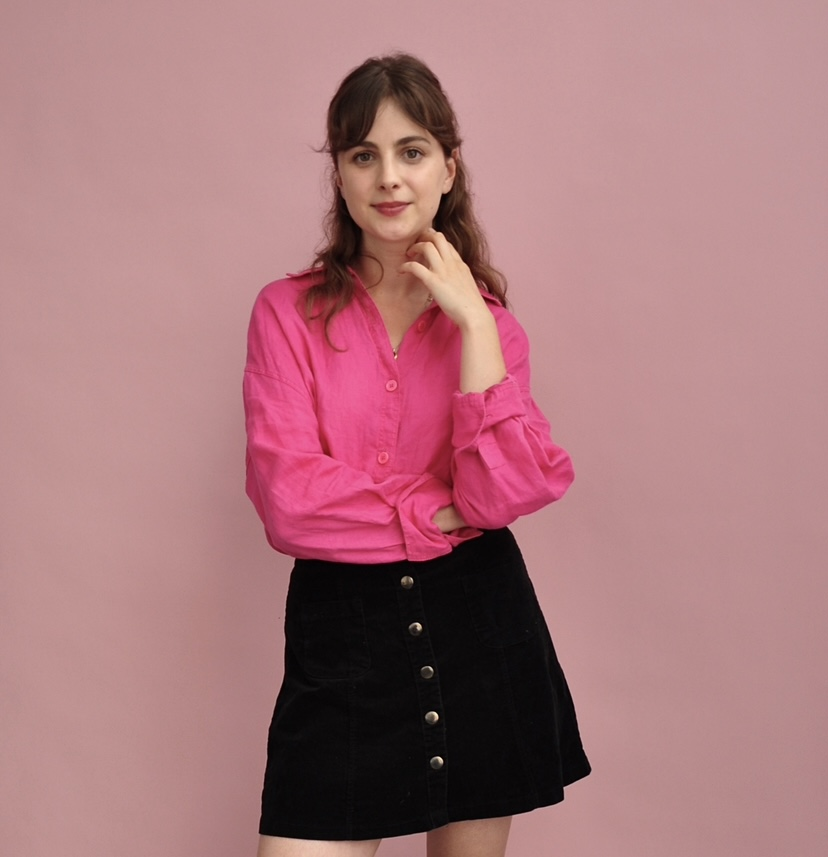
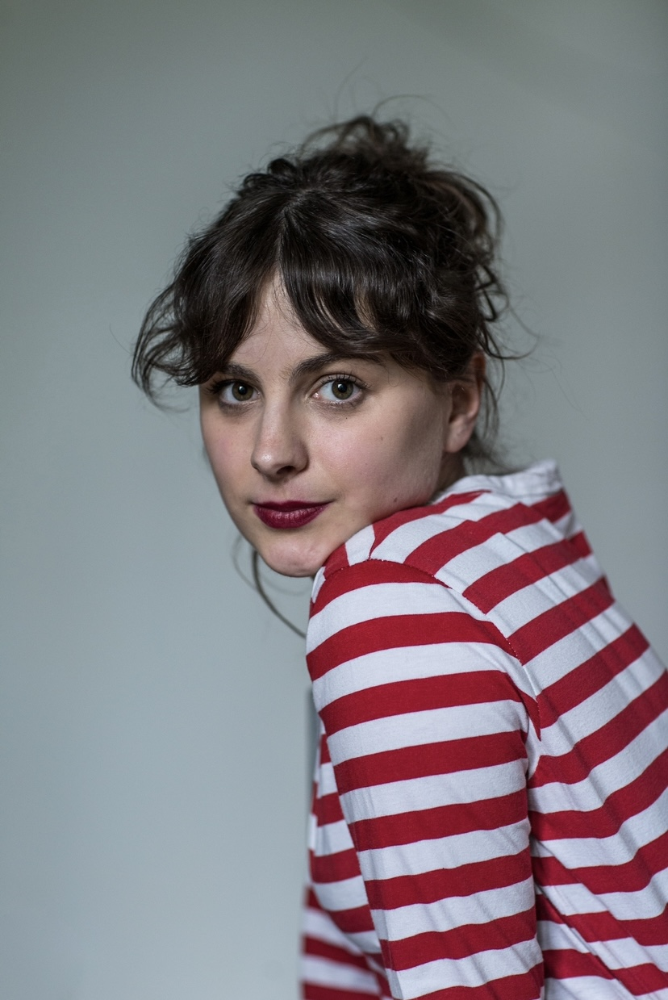
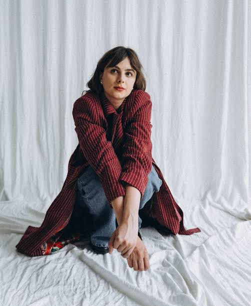
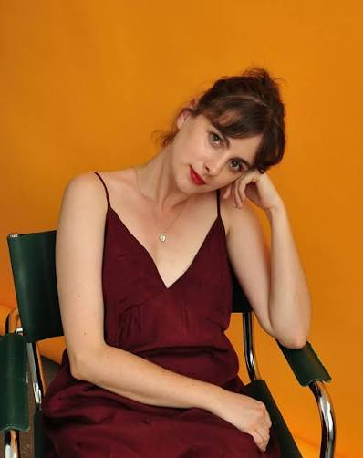
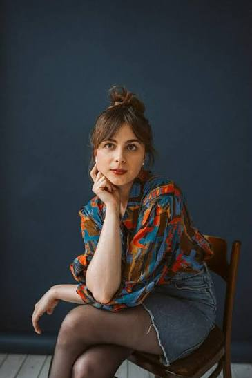

AKTORKA • POETKA • WOKALISTKA
Aleksandra
Samelczak.
Aktorka teatralna i filmowa. Członkini zespołu aktorskiego Teatru Polskiego w Poznaniu.
O mnie

ALEKSANDRA SAMELCZAK
Aktorka.
Poetka.
Artystka.
Absolwentka Wydziału Aktorskiego Akademii Sztuk Teatralnych im. Stanisława Wyspiańskiego w Krakowie.
Jeszcze podczas studiów zadebiutowała na scenie Teatru im. Juliusza Słowackiego w Krakowie w spektaklu „Kariera Arturo Ui”.
Za tytułową rolę w spektaklu dyplomowym „Joanna d’Arc” otrzymała wyróżnienie aktorskie podczas 38. Festiwalu Szkół Teatralnych w Łodzi.
Jest również laureatką III Nagrody Ogólnopolskiego Konkursu Wokalnego „Pamiętajmy o Osieckiej”.
TEATR • FILM • POEZJA • MUZYKA
Opowiadanie historii
w różnych formach.
Teatr
TEATR POLSKI W POZNANIU
Wybrane
spektakle.
Aleksandra współpracuje z Teatrem Polskim w Poznaniu od 2020 roku. Kliknij wybrany spektakl, aby przejść do jego strony.
Dom lalek
reż. Tadeusz Pyrczak
EXTRAVAGANZA o religii
reż. Joanna Drozda
Kordian i cham
reż. Joanna Bednarczyk
Pieścidełko
reż. Konrad Marek Cichoń
Nie-boska komedia
reż. Piotr Pacześniak
Pigmalion
Teatr Polski w Poznaniu
Querelle
Teatr Polski w Poznaniu
Faustus
Teatr Polski w Poznaniu
Taśmy rodzinne
Teatr Polski w Poznaniu
Nowy Pan Tadeusz
tylko że rapowy
Delivery Heroes
Bohaterowie na wynos
RAUT
nowe brzmienia
03
SHOWREEL
Moja
wizytówka.
Aktorska wizytówka Aleksandry Samelczak.

ALEKSANDRA
Samelczak.
PORTFOLIO
Galeria.



Film i telewizja
Przed
kamerą.
Aleksandra występuje również w produkcjach filmowych i telewizyjnych. Szerszej publiczności znana jest między innymi z roli Julki w serialu „Bunt!”.
Bunt!
Julka
Lockdown
film
Człowiek z walizką
film
Jak zostać gwiazdą
film
Legiony
film
MUZYKA
Wieczornik.
Aleksandra Samelczak jest wokalistką zespołu Wieczornik.
Zespół tworzy poetycką, półakustyczną muzykę, łącząc wokal, fortepian, gitary, wiolonczelę i gitarę basową.
W 2026 roku ukazał się debiutancki album „Równoległoświaty”.
POEZJA
„Dom”
Debiutancki tom poetycki Aleksandry Samelczak.
W 2025 roku ukazał się tom poetycki „Dom”, wydany przez Wydawnictwo Austeria.
Kup książkę „Dom” ↗KONTAKT